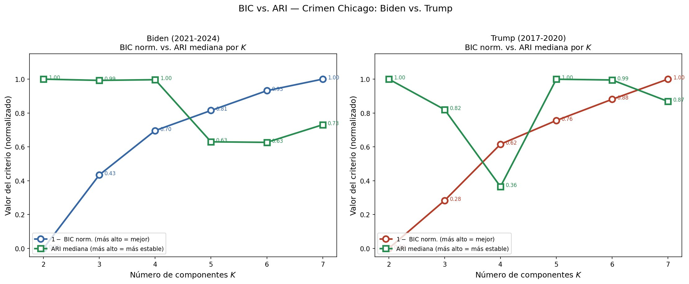
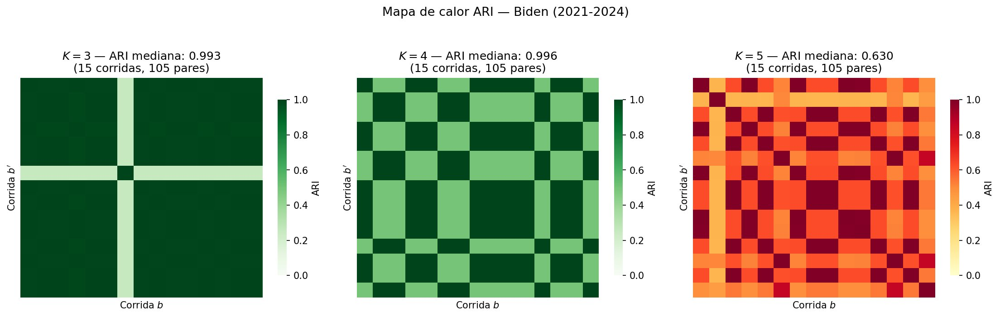
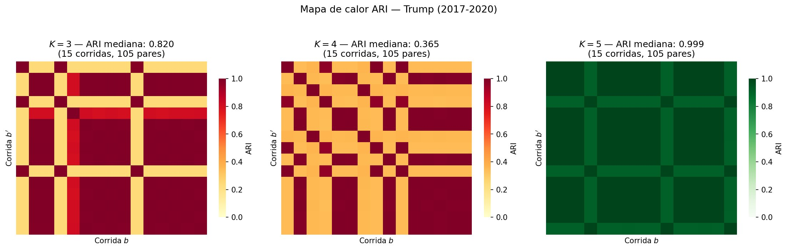
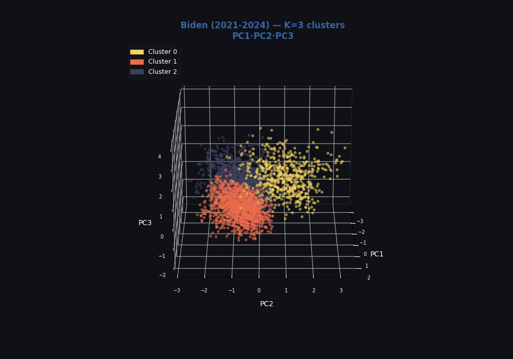
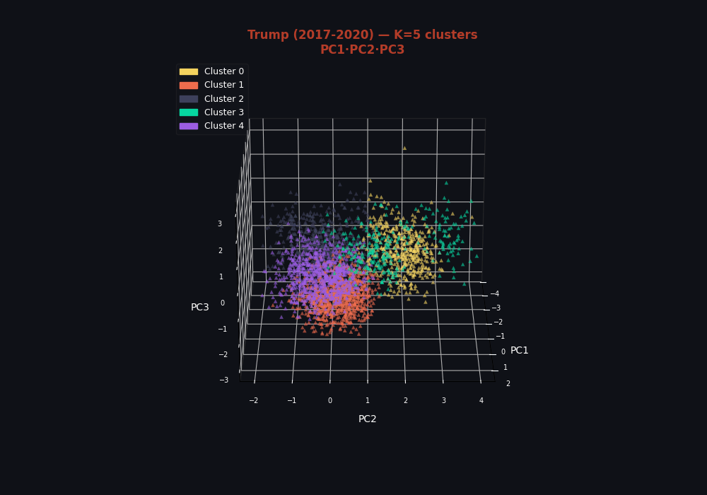

Fuente de datos
Los datos provienen del Chicago Data Portal, repositorio público de la ciudad de Chicago que contiene todos los delitos reportados desde 2001 hasta la actualidad. Se filtraron los registros correspondientes a los años 2017–2020 (periodo Trump) y 2021–2024 (periodo Biden) para construir los dos conjuntos de análisis.
🔗 Crimes 2001 to Present — Chicago Data PortalReducción dimensional con PCA
El Análisis de Componentes Principales (PCA) transforma las variables originales en combinaciones lineales ortogonales —los componentes— que concentran la mayor varianza posible. Esto reduce el ruido, elimina correlaciones entre variables y permite que ambos periodos se comparen en el mismo espacio latente antes de aplicar el GMM.
¿Qué captura cada componente?
Cada componente principal es una combinación de todas las variables. Las variables con mayor peso (loading) son las que más contribuyen a definir ese eje de variación.
| Componente | Varianza | Variables dominantes | Interpretación |
|---|---|---|---|
| PC1 | 15.0% | Tipo de delito · Lugar del hecho | Separa crímenes callejeros (robos, daño a propiedad) de incidentes residenciales. Es el eje de naturaleza del delito. |
| PC2 | 12.9% | Hora · Día de la semana | Captura la variación temporal. Distingue delitos nocturnos de diurnos y fines de semana de días hábiles. Eje de temporalidad. |
| PC3 | 12.7% | Doméstico · Arresto | Separa incidentes intrafamiliares con y sin arresto. Es el eje del contexto relacional del delito. |
| PC4 | 12.7% | Mes · Año | Recoge tendencias estacionales y de largo plazo. Permite capturar cambios estructurales año a año dentro de cada periodo. |
| PC5 | 12.3% | Tipo de delito · Mes | Interacción entre el tipo de crimen y la estacionalidad. Algunos delitos (ej. robos de vehículos) tienen picos estacionales marcados. |
Modelo GMM y selección de K
Un Gaussian Mixture Model asume que los datos provienen de una mezcla de K distribuciones gaussianas, cada una con su propia media y matriz de covarianza. A diferencia del k-means, permite grupos de forma elíptica y tamaños distintos, lo que es más realista para datos heterogéneos como registros de crimen.
Selección del K óptimo — BIC vs ARI
La gráfica muestra 1 − BIC normalizado (más alto = mejor ajuste) y ARI mediana (más alto = más estable) para cada K. El K óptimo es donde ambos criterios son simultáneamente altos.

Mapas de calor ARI — Estabilidad entre corridas
Cada celda muestra el ARI entre dos corridas independientes del GMM para un mismo K. Verde oscuro uniforme = particiones idénticas = máxima estabilidad.


Resultados y caracterización de clusters
Visualización 3D en espacio PCA
Cada registro proyectado sobre PC1, PC2 y PC3. La separación espacial entre clusters confirma que el GMM captura estructuras reales en los datos.


Biden (2021–2024) — K = 3
Estructura delictiva estable · Alta estabilidad (ARI = 0.993)
Trump (2017–2020) — K = 5
Estructura más heterogénea · Máxima estabilidad (ARI = 0.999)
La diferencia más notable entre periodos es la fragmentación estructural: Trump requiere 5 clusters para describir sus patrones delictivos, frente a 3 en Biden. Esto sugiere que durante 2017–2020, los crímenes en Chicago se distribuían en grupos más distintos entre sí.
Un hallazgo llamativo es el Cluster 2 de Trump con arrest rate del 100% —concentrado en narcóticos—, lo que podría reflejar una política de enforcement más agresiva sobre ese tipo de delito en ese periodo. Por otro lado, el Cluster 0 de Trump agrupa más del 57% de los datos con arrest rate del 0%, sugiriendo un volumen alto de delitos patrimoniales y de fraude que raramente se resuelven con arresto.
En Biden, la estructura es más compacta: el Cluster 2 concentra la violencia doméstica (domestic rate 65%) con una tasa de arresto moderada del 11.9%, lo que puede indicar mayor registro y seguimiento de este tipo de incidentes. Estos patrones son consistentes con cambios en las prioridades de reporte y persecución penal entre administraciones, aunque la causalidad directa no puede establecerse con este análisis.